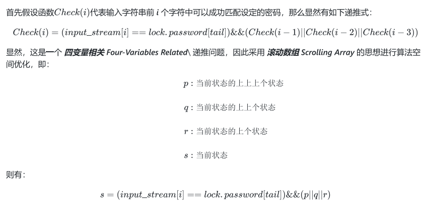

本项目为本人在大三下的核心课程《微机原理综合设计》中的作品，并取得了93分的最高分。该项目是基于蓝桥杯开发板CT107S以及液晶显示屏LCD12864并采用C语言进行开发的。最终得到了一款实现了虚位密码、子串匹配密码、检测恶意输入行为、时间显示和校准等多种功能的电子锁。
首先，本项目对开发板的硬件资源进行了规划和分配如下:
本项目通过如上区域划分的 4*4 矩阵键盘实现了密码字符的输入、退格、确认、设置等功能，并通过 shift 键实现字母复用输入。不仅如此，长按Shift后直接进入字母输入模式，再按一次退出。对于键盘事件的处理主要按照如下流程图进行:
紧接着本项目按照页面栈的原理进行页面的搭建和管理，共有如下几个父级界面:
其中设置页面又与其多级子页面形成如下树形结构关系:
-设置界面
-密码设置界面
-密码匹配模式修改界面
-密码内容修改界面
-时间校准界面
本项目的创新点在于提出了一种更富有冗余性的密码匹配模式——子串匹配模式，即在正确密码除头尾的任意两字符间插入其他字符也可正确匹配。假定我们的密码是123456，给出样例如下:
该匹配算法的实现通过动态规划并辅以滚动数组优化空间实现。具体思路和递推公式如下:
其中 tail 为正在进行校验匹配的密码索引，它是一个动态指标，由于冗余性的存在，它需要每遍历3位输入更新一次，因为第 i 位的密码有三个可能性位置。
综上，该智能锁的整体运行逻辑流程图如下:
下面对本项目的核心代码进行展示:
本项目最核心的部分是动态规划实习的子串密码匹配，该部分代码如下:
在本设计中本人主要担任功能设计、模块分配、算法设计、代码编写、硬件调试等工作。
整个设计和实现过程磕磕绊绊，从最初的点灯到折磨了我几个夜晚的点LCD——从一开始的delay函数频率不对齐问题（电赛便遇到过的老毛病）到最后的对比度问题。硬件和代码的联调对我而言就两个字——折磨。
我是一个立志做 AI 研究和算法研究的 特别特别特别“软” 的自动化学生，这倒也没有那么稀奇了，不过对于天天浸淫在上位机和服务器的高级算力和存储资源的我来说，刚上手CT107S便被数据内存分配打了个措手不及。好在STC15F2K60S2的外部存储空间还是非常充足的，以至于后来的所有变量我都用了xdata进行声明，甚至函数中的临时变量亦是如此。
而这样提心吊胆地用着存储空间的日子也让我深刻反思了不少——在进行算法设计编程时，我们常常讲空间复杂度优化，简称空间优化。但其实这一优化的对象一般是指代码中对重复计算数据的大量重复存储。回看自己在LeetCode、PTA、CSP上刷算法题时的代码，不禁让我后怕——到处都是 int 、 double 等字长很长甚至最长的变量类型声明。生动一点说，就好比如今的我突然回到50年代生活了一段时间。这样质朴与和存储空间勾心斗角的生活教会了我很多很多，比如C51单片机中不能够引用二值变量 bool ，但可以通过 bit 直接进行位声明、位操作，其实 bool 本质上也只是一个单独的二进制位。再比如从寄存器的各种标志位信息存储可以学会将多种二值标志位放到一个字节中进行存储，然后用与、或等逻辑操作进行值的读写。（虽然实际赶工时没有怎么用到，如果时间充足，这方面我是非常希望能下功夫编排和整理的）
存储空间交给我的不仅仅是上面这些，上面只是单片机中数据存储的部分，既幸运也不幸的是，我还在程序存储上遇到了大麻烦。当我的代码长度来到2K时，Keil5突然报错说代码长度超限，不允许编译。这吓得我急出一身冷汗，也顺便让我傻到忘记了STC15F2K60S2的程序Flash是有60K的！！！
这时以为是真的代码太长装不下的我开始了疯狂优化代码，从逻辑合并到设置里打开顶级代码优化，最后努力到不加上时间更新函数能够恰好够着2K的限制。当然最后恍然大悟我有60K空间的时候才回过头解决了Keil5(bushi)，装过了一个C51版本的Keil5并破解后便可以正常编译了。写下这些感想时的我还差时间校准模块的代码没完成，此时的程序存储空间已经使用了6017B，块6K了。
依旧顺着代码长度，这次的设计中非常遗憾的是没有能够很好地进行模块化，后面的很多功能都直接堆进 main.c 里了，导致其内容有上千行。不过倒也应付的过来，后续有时间的化要好好优化和封装一下。（曾经打电赛时我嫌标准库代码长还疯狂进行了封装，当时做的LED翻页多功能选择模块也封装地非常好，到底还是太自信了，拖到最后才来通宵弄哈哈哈哈哈）
当然，这次也用到了很多很多偏 “软件” 的知识，这就比较富有我的个人特色了哈哈哈。从页面栈到动规解算密码，从前端架构到后端算法，从百草园杀到三味书屋，属于是梦幻联动了，我非常满意和自豪！！！
说到这里的动态规划又不得不提到给出了诸多宝贵意见的我的女朋友——金统院2019级的程莹同学，在此特别致谢程莹同学。
她在设计之初便带领我查阅资料文献最终为密码匹配模式提出了两点宝贵意见:
其实在拿到单片机之初便有了大概构想，直到最后磕磕绊绊地实现才发现自己仍有诸多不足，比如一开始一天埋头钻研的矩阵键盘，例程中的思路是按下后便一直响应该按钮的事件，即当前数码管显示的是上一次按下的按键代表的信息。这和密码输入是很不一样的，因为本设计采用了全中断编程，即所有操作挂载在1ms一次的定时器中断服务函数中，若按照例程逻辑，则按下按键1后电子锁将认为你每一毫秒都输入了一个1直到你输入下一个数。因此按键输入处理单独拎出来在第一章中的设计中细说了思路并附上了大概的流程图。
这次设计下来的收获当然远不止这些，比如各个模式的转换用到了类似于数电课程中学过的状态机的概念，本设计其实就是一个大号的状态机。不仅如此，为了体验一把硬件设计师的快感，本报告中的所有原理图、流程图均为本人自学 Adobe Illustrator 亲手绘制的，奇怪的知识增加了。
像这样的恍悟和新知数不胜数，但是至此我却已然不知所言。
非常感谢指导老师王亚老师上个学期对单片机知识的传授以及本次设计中对我特殊情况的包容。
最后再次鸣谢程莹同学陪我度过的不知多少个为了本设计不眠不休的夜晚。
行文且已尽，求知尚无垠。